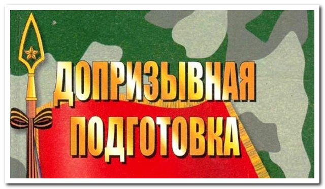

Дополнительный материал по учебным предметам "Допризывная Подготовка" и "ЗНТЧС".
На главную
Конспекты по "Допризывной подготовке"
Конспекты по "ЗНТЧС"
Темы ДП:

Тема 1 - Вводное занятие
Тема 2 - Доблесть и слава воинов в борьбе за свободу Отечества
Тема 3 - Патриотизм как основа сознательного отношения граждан
Тема 4 - Международное гуманитарное право
Тема 5 - Административная отв. за уклонение от мероприятий призыва
Тема 6 - Учреждения высшего образования системы национальной безопасности
Тема 7 - История и современность белорусской армии
Тема 8 - Состав и структура Вооруженных Сил Республики Беларусь
Тема 9 - Вооружение и военная техника ВВС и войск ПВО
Тема 10 - Вооружение и военная техника Сухопутных войск
Тема 11 - Военная политика Республики Беларусь
Тема 12 - Современная военно-политическая обстановка в мире (Презентация)
Тема 12 - Современная военно-политическая обстановка в мире (Текстовый документ)
Тема 13 - Моральный дух и патриотич созниние граждан
Тема 14 - Закон о статусе военнослужащих
Тема 14 - Закон о воинской обязанности
Тема 15 - Виды стрелкового оружия
Тема 16 - Стрелковое оружие
Тема 16-1 - Назначение и боевые свойства автомата Калашникова
Тема 16-2 - Устройство автомата Калашникова
Тема 17 - Общевоинские уставы. Военная присяга
Тема 18 - Обязанности военнослужащего
Тема 18 - Воинская дисциплина. Суточный наряд
Тема 19 - Строи и их элементы
Тема 20 - Обязанности перед построением и в строю
Тема 21-22 - Огневая подготовка (инженерные мины)
Тема 22 - Инженерные заграждения
Тема 23 - Огневая подготовка Виды ручных гранат
Тема 24 - Метание ручных гранат
Тема 25-1 - Тактическая подготовка
Тема 25 - Тактическая подготовка (Современный общевойсковой бой)
Тема 26 - Тактическая подготовка (Наблюдение и передвижение на поле боя)
Тема 27 - Действия в наступлении
Тема 28 - Действия в обороне
Тема 29-30 - Ядерное оружие
Тема 31 - Химическое оружие
Тема 32 - Биологическое оружие
Тема 33 - Ориентирование на местности без карты
Тема 34 - Магнитный азимут и его определение
Тема 35-36 - Топографические карты
Тема 37.1 - Оказание первой помощи раненым в опасной зоне
Тема 37.2 - Оказание первой помощи раненым в зоне укрытия
Тема 38 - Оказание первой помощи раненым в зоне эвакуации
Тема 39-40 - Иммобилизация и эвакуация раненых
Тема 41 - ПЗ №1_Неполная разборка и сборка автомата Калашникова
Тема 42 - №1_Метание ручных гранат
Тема 43 - №2_Строевая стойка. Движение. Повороты на месте и в движении
Тема 44 - №2_Строи отделения. Движение строем
Тема 45 - №3. Наблюдение и передвижение на поле боя
Тема 46 - №3. Измерение расстояния и ориентирование
Тема 47-48 - Средства индивидуальной защиты
Тема 49-50 - №4_Подготовка и пользование СИЗ
Тема 51-52 - Оказание первой помощи раненым в зоне укрытия
Тема 53-54 - Средства коллективной защиты